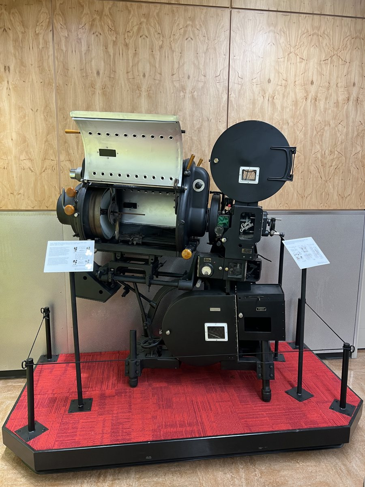
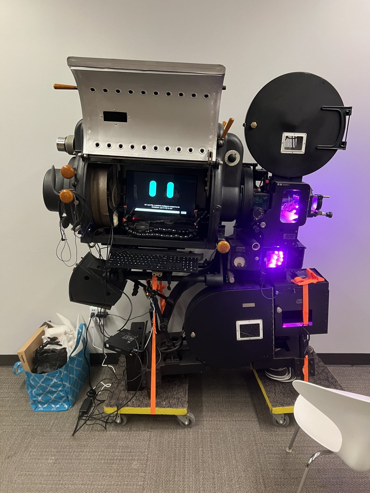
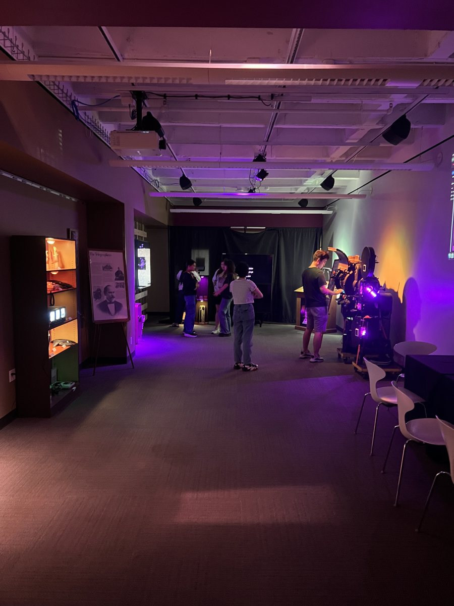
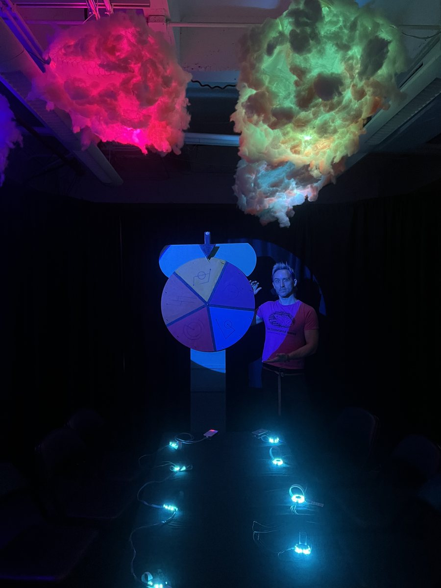
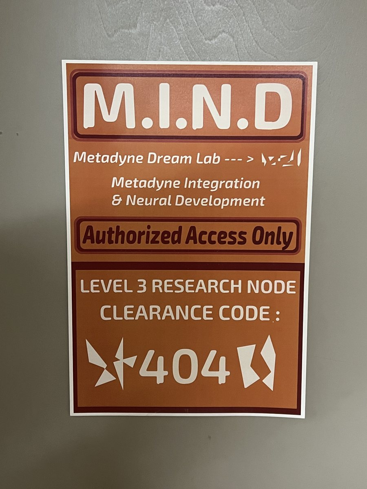
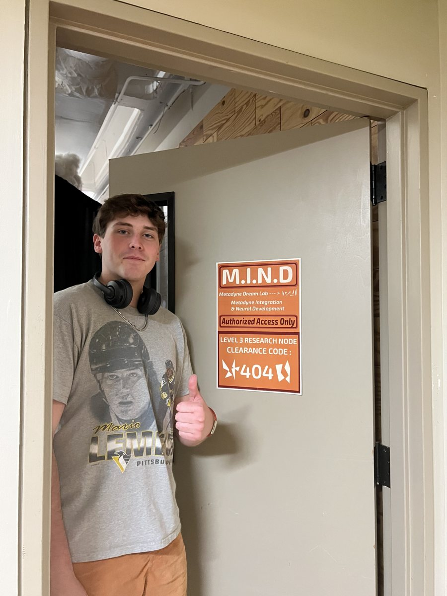

R&D
I build pipelines. Live production is a schedule problem as much as a creative one — the idea has to survive contact with a review cycle, a load-in, and a broadcast clock. So when a step in that chain is slow, I build the tool that removes it.
Two of those builds are below, followed by AI and video edits. Each one started because something took too long or could not be shown to a client fast enough, and each one ended up changing what was possible to pitch. After them is an installation from the Texas Immersive Institute, where the build was the experience itself.
The builds
OSL shaders Procedural look development
Custom Open Shading Language shaders that generate texture and atmosphere procedurally instead of from painted maps — neon, glow, fog, and surface detail driven by parameters rather than by files.
What it made faster: a look becomes a set of dials. Changing the mood of a scene is a slider move, not a re-texture, so the answer to "can we see it warmer?" is minutes instead of a day.
ComfyUI — custom fashion LoRA Concepting at pitch speed
A node-based Stable Diffusion workflow with a fashion LoRA I trained myself, plus ControlNet passes, IP-Adapter style transfer, and upscaling chains. The series runs one consistent look across Tokyo, Detroit, Mexico City, and Berlin.
What it made faster: a look book that used to mean a shoot or a week of renders now takes an afternoon — which means a client sees the idea while it is still an idea, and the expensive production only starts on something already approved.


AI & video edits TouchDesigner × StreamDiffusion · generative video
A real-time diffusion pipeline inside TouchDesigner that reacts live to audio, video or sensor input, so the visuals respond to a performance instead of playing back from a timeline. Alongside it, concept films made with generative video tools and then graded and cut like real footage, so a client can watch an idea move before anything is produced.
Installations
Vox Temporis — Interactive Emmy Wall Texas Immersive Institute · UT Austin · 2024
An immersive installation telling the story of UT Austin's Emmy winners and its long history in entertainment. The centrepiece was “Phil,” an old film projector that Sam and I turned into a talking guide. A voice bot inside it tells visitors the history, and a tablet built into its side door shows the photos to go with it. I designed the space in 3D before we built it, and planned the build: trusses that hide the projectors, LED “wires” along the walls, and a midi-controller remote.





